People
The Team
We are an interdisciplinary group of microbiologists, biogeochemists, computational scientists, and ecologists working together at Berkeley Lab and UC Berkeley. Click any card to learn more.
Principal Investigator
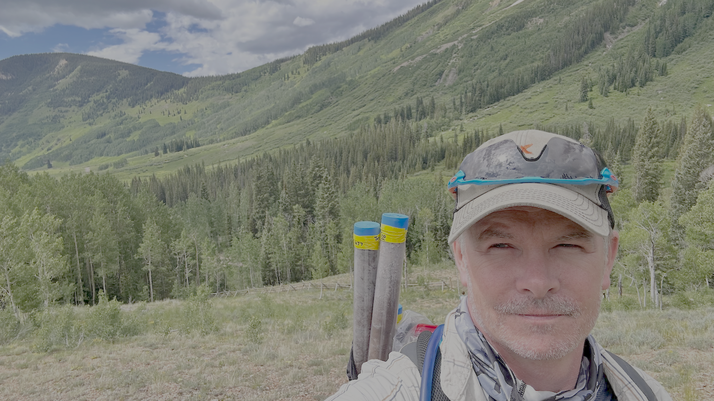
Eoin Brodie
I'm a senior scientist at Berkeley Lab and Deputy Director of the Climate and Ecosystem Sciences Division. I'm also an adjunct Associate Professor at UC Berkeley and co-direct the Joint Berkeley Initiative in Microbiome Sciences, which allows me to connect research, teaching, and collaboration around questions I care deeply about.
I'm a microbiologist and biogeochemist, and I work with an incredible team to understand how microbes shape soils, ecosystems, and the planet. We combine molecular biology, advanced sensing, and computational modeling to study microbial communities from genes to entire watersheds, with the goal of using microbiomes to support sustainable agriculture, strengthen ecosystem resilience, and help restore damaged environments.
I lead Berkeley Lab's Watershed Function Science Focus Area and the Microbial Mechanisms component of the Belowground Biogeochemistry Science Focus Area. I also serve as an editor for Frontiers in Microbiology and advise several scientific centers and industry partners.
Research Staff
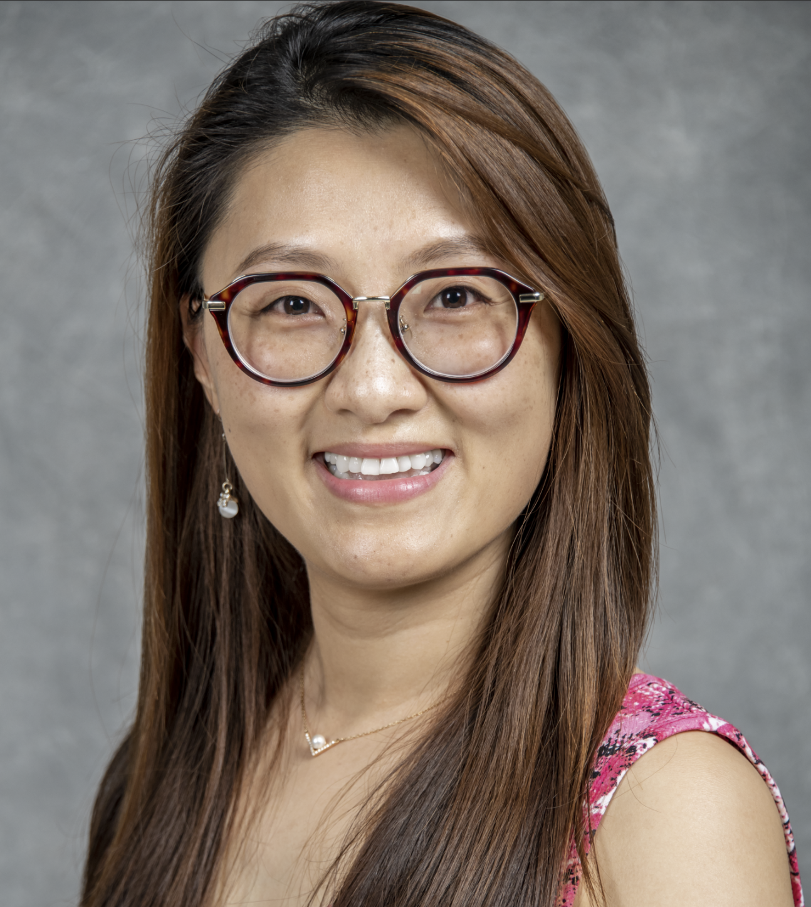
Shi Wang
With more than a decade of experience managing environmental microbiological research labs, Shi brings extensive expertise in safety management, which led her to her current role as the senior occupational safety specialist at the newly established Biological and Environmental Program Integration Center (BioEPIC).
Shi's scientific background bridges molecular approaches, including multi-omics, with advanced analytics, utilizing machine learning and AI to unravel the functional traits of complex microbial communities. Her academic journey includes dual Master's degrees—one in Biotechnology from Wageningen University in the Netherlands, and another in Data Analytics from the Georgia Institute of Technology in the United States.
Beyond her technical and safety leadership, Shi is dedicated to fostering a strong sense of community within the laboratory environment by promoting stewardship values. She serves as Chair in Policy Committee under the Women Support and Empowerment Council (WSEC) focused on employee support and empowerment, working to enhance workplace well-being and collaboration across the scientific community.
Shi's multifaceted role exemplifies her dedication to scientific innovation, workplace safety, and fostering an inclusive environment for all.
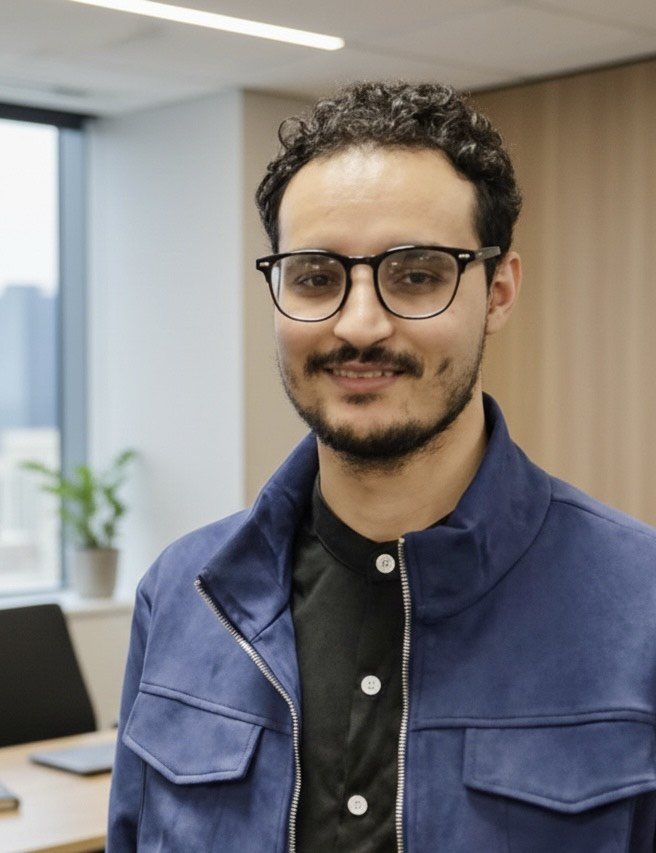
Slimane Hddaoui
Slimane Hddaoui is a Research Associate and Lab Manager in the Brodie Lab at Lawrence Berkeley National Laboratory. He holds an M.S. in Biology with a focus on Biodiversity Management and Conservation and a B.S. in Applied Plant Biology. His research explores soil and subsurface microbial ecology, microbial–biochar interactions, and microbiome assembly, with applications in carbon sequestration and ecosystem restoration.
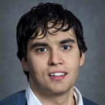
Ulas Karaoz
Ulas Karaoz is a computational microbial ecologist whose work connects microbiome data, genome-resolved analysis, AI/machine learning and ecosystem processes. His research focuses on microbiome modeling, microbial ecology across scales, and integrating multi-modal high-throughput microbiome measurements with environmental data leveraging high-performance computing. He has co-led studies on rhizosphere microbiome assembly and dynamics, showing how root exudate chemistry, environmental change, and microbial traits interact to structure plant-associated communities over space and time. He has also been a key developer of computational tools, including microTrait for encoding microbial genomes into trait-based representations used in ecological models.
Mentorship opportunities: See Prospective Students section.
Gianna Marschmann
My research bridges the gap between computational modeling and experimental validation. As a scientist in the Molecular Ecology and Biogeochemistry Department at Lawrence Berkeley National Laboratory, I analyze DNA sequencing data, translate biological phenomena into computational models, and explore the outcomes through targeted experiments. My current work is applied to several key projects, including developing advanced computational tools for fungal genomes, creating modular microbial environments to test thermodynamic theory, contributing to the ExaEpi initiative for epidemiology, and investigating the systems biology of the soil microbiome through the Microbes Persist project. I hold a PhD from the University of Hohenheim and was formally trained as a theoretical physicist with a focus on complex systems at Heidelberg University, Germany.
Mentorship opportunities: See Prospective Students section.
Graduate Students
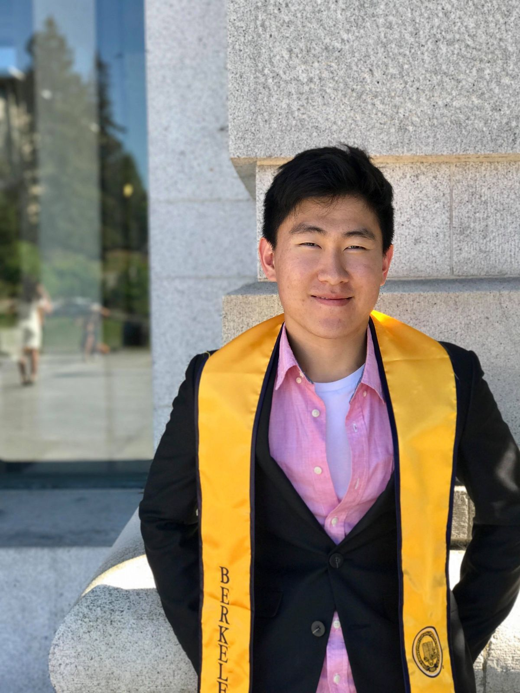
Jack Kim
Junhyeong is a PhD student at UC Berkeley studying bioinformatics of microbial genetics. He is interested in the discovering novel mechanisms of microbes across diverse samples using in silico methods. His current projects include exploring the effect of water management on rice paddy microbiome, microbial response to lanthanides, and novel mechanisms in candidate phyla radiation.
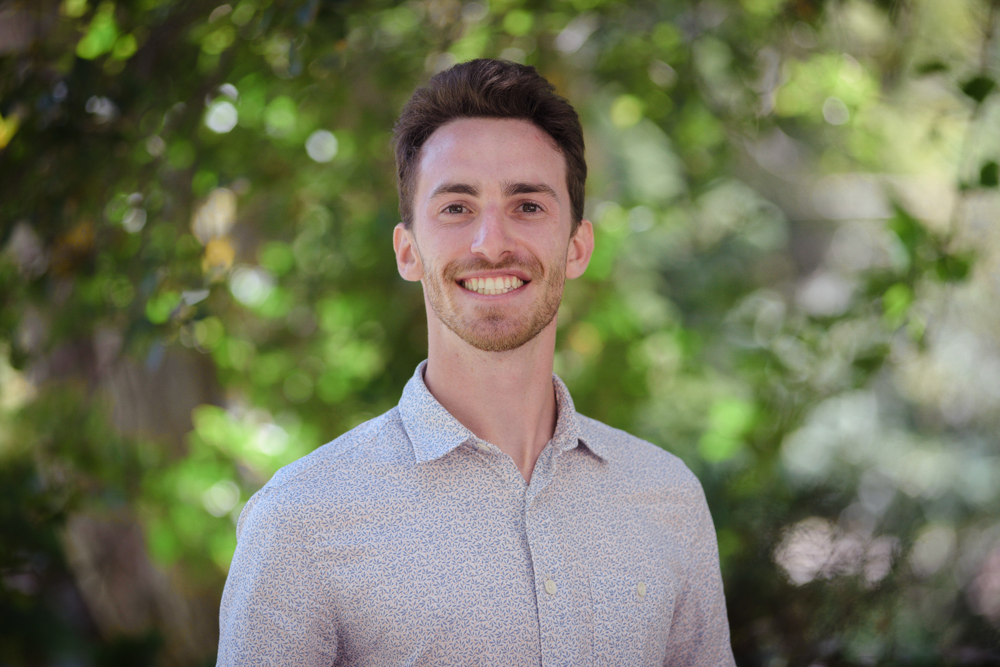
Preston Tasoff
Preston Tasoff is a PhD candidate (grad 2027) in the Environmental Science, Policy, and Management Program at UC Berkeley. His research interests lie in understanding the soil microbiome and its interactions with climate change, in the context of developing microbial applications to help ecosystem resilience. Right now, he is working on drought in the East River Watershed, CO, using meta-transcriptomics to identify which microbes are drought adverse/tolerant as well as which biogeochemical processes they are involved in.
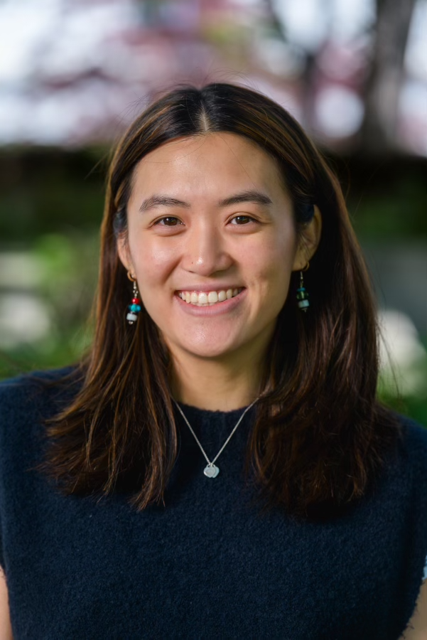
Ashley Eng
Ashley (she/her) is a Microbiology PhD candidate in the Department of Plant and Microbial Biology. Her project focuses on understanding the role of bacterially produced micronutrients in the rhizosphere. She uses culture-based (e.g. synthetic microbial communities) and computational tools to explore vitamin B12 as a model micronutrient. She completed her B.S. in Microbiology at the University of Massachusetts Amherst. Ashley is co-mentored by Michiko Taga.
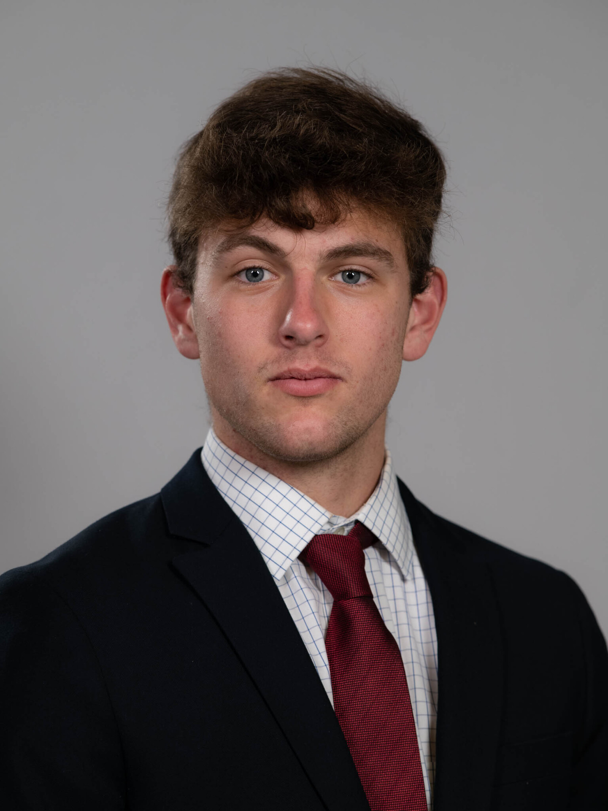
Tyler Bernard
Tyler is a PhD student in the Department of Environmental Science, Policy & Management with a Designated Emphasis in Computational Biology. His research focuses on plant-soil-microbe interactions, with a particular interest in how root exudates mediate belowground processes. He combines empirical approaches with computational methods, aiming to bridge scales from molecular mechanisms to ecosystem dynamics. Before coming to Berkeley, he earned degrees in Philosophy and Environmental Science from Washington and Lee University. Tyler is co-mentored by Laureano Gherardi.
Undergraduate Researchers
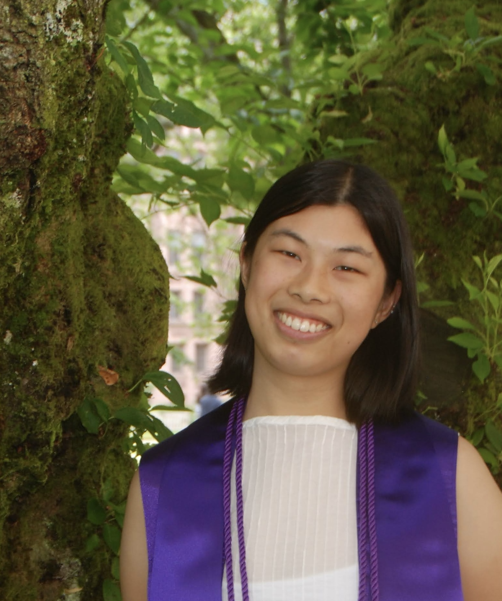
Lauren Yan
At LBNL, Lauren works on emulating an agent-based model of fungal networks to study the relationship between fungal traits, network morphology, and growth strategy. She is also interested in dynamical systems, biophysics, ecology, and climate dynamics. She is from the Bay Area originally, but attended college at the University of Washington in Seattle where she studied physics and applied math.
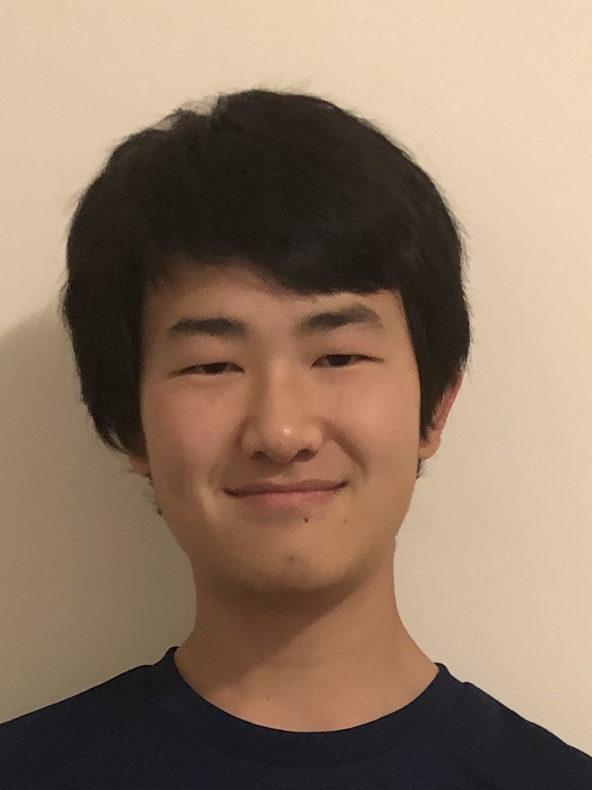
Brian Yee
Brian is a third-year undergraduate at UC Berkeley majoring in Molecular Environmental Biology. In the lab, he is interested in the role of Komagataella in methanol oxidation in the coastal grassland soils of Point Reyes.
Maya Narang
Maya is a junior at UC Berkeley studying Microbiology and Data Science. She is working on developing a biologically realistic model of bacterial cell division by predicting microbial cell size from metagenomes.
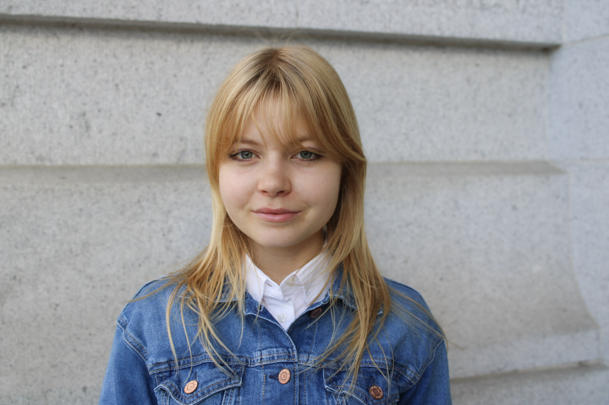
Stellamaris Bailey Scott
Undergraduate researcher in the Brodie Lab.
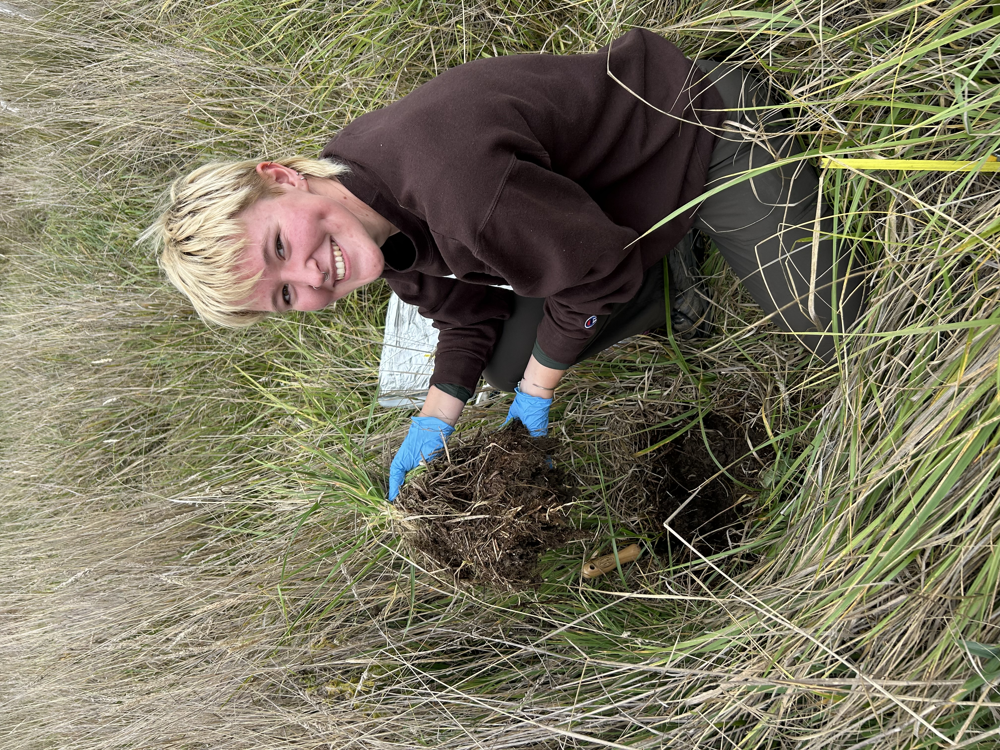
Madeleine Morris
Undergraduate researcher in the Brodie Lab.
Lab Alumni
Patrick Sorensen, PhD
Former Research Scientist (2017–2025), now Assistant Professor in the Department of Natural Resources Science at University of Rhode Island.